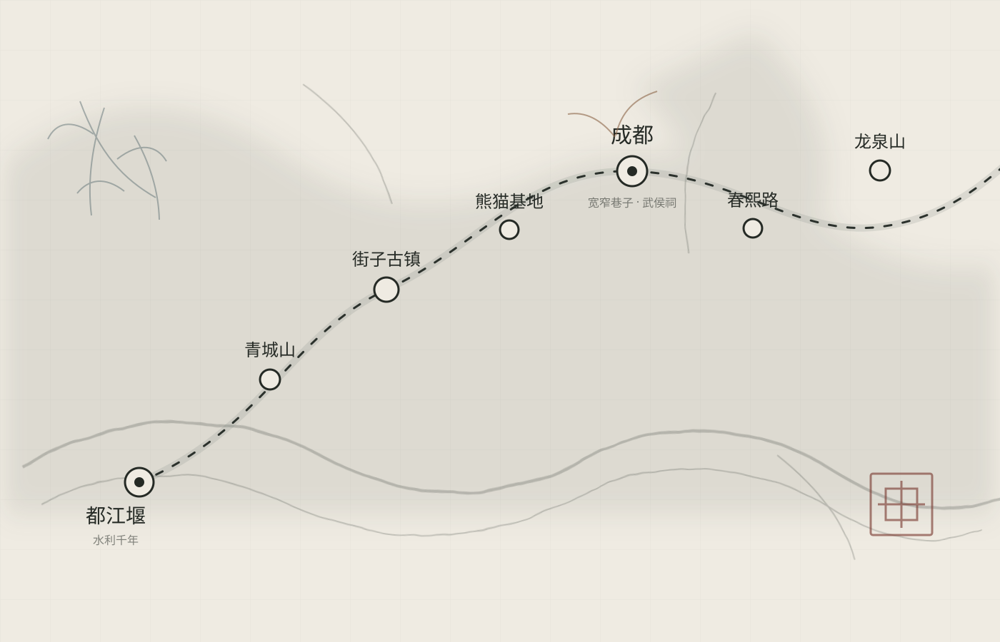

02日 · 经典初见
一城烟火
两日恰好
适合第一次来成都的人，把老街、熊猫与三国故事一次收入行囊。
- DAY 01宽窄巷子 → 人民公园 → 武侯祠 → 锦里
- DAY 02大熊猫基地 → 文殊院 → 春熙路 → 川剧

THREE JOURNEYS · 三种行旅
不赶路，也不错过。每一个行程都保留一段空白，给街边小馆、茶馆闲坐或一场不期而遇的雨。
02日 · 经典初见
适合第一次来成都的人，把老街、熊猫与三国故事一次收入行囊。
03日 · 山水入蜀
沿着岷江向西北去，在都江堰听水，在青城山入云。城市的另一面，藏在山水之间。
05日 · 慢游天府
多留两天给博物馆、茶馆与街巷，把“来了就不想走”慢慢变成真的。
BEFORE YOU GO · 行前手札
成都的节奏宜慢不宜赶。把最想去的地方放在清晨，把好吃的留给夜晚，剩下的时间，交给街巷与茶香。
春秋最宜，3—5 月花木初盛，9—11 月天高气清。夏季多雨闷热，冬季湿冷，但茶馆与火锅正当时。
地铁覆盖主要景点，老城区适合步行。前往都江堰、青城山可从犀浦乘城际列车，熊猫基地建议早到。
上午 7:30—10:00 最活跃。请保持安静、不投喂、不使用闪光灯，把清晨留给它们。
熊猫基地、都江堰与青城山建议提前预约。热门川剧场次需尽早订票，节假日请为交通预留更长时间。